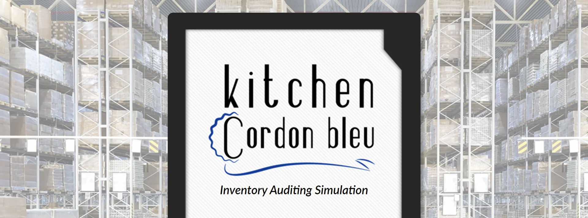
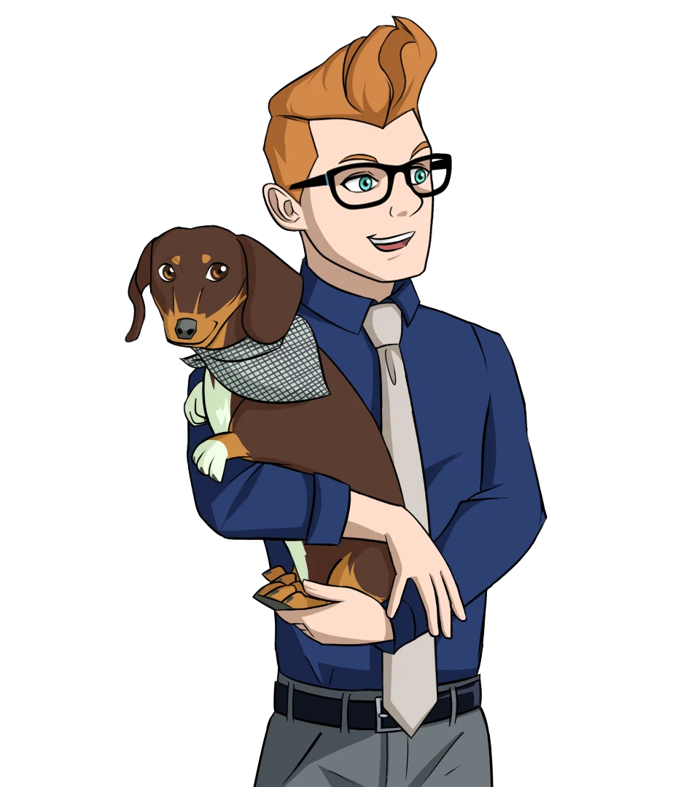
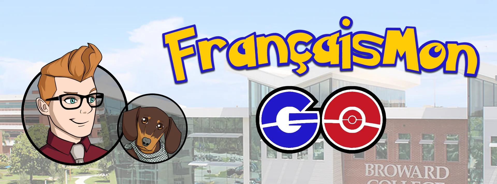

Accessible simulation
Kitchen Cordon Bleu
A narrative inventory audit built as an accessible alternative to VR.
See the case study →
Learning · Experience · Design
I’m in my element with problems that feel like sandboxes: opportunities to build, experiment, adjust, and follow one promising idea into the next.

Accessible simulation
A narrative inventory audit built as an accessible alternative to VR.
See the case study →Research through design
Exploring mobile VR, telecollaboration, and a stronger sense of shared place.
Explore the research →
Alternate-reality learning
A QR scavenger hunt that grew into a three-week narrative experience.
Enter the story →
Global product development
A reimagined learning model produced with writers and actors worldwide.
Read the case study →